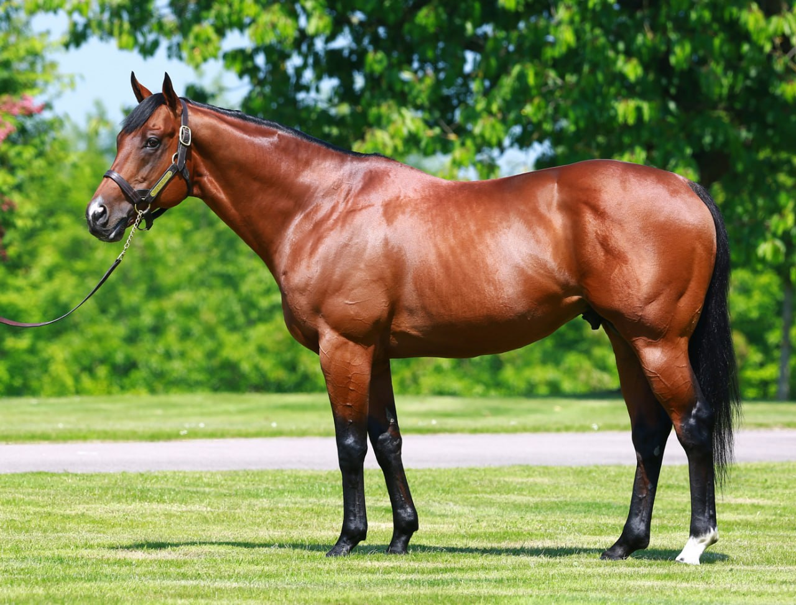

Siyouni, el semental francés del Aga Khan que domina la cría europea desde Haras de Bonneval
Pocas figuras explican la cría del pura sangre europeo de la última década como Siyouni. El bayo nacido el 14 de febrero de 2007 en Francia, criado y montado por el Aga Khan IV, se ha consolidado como el reproductor más influyente de su generación en el continente. En 2026 encara su decimosexta temporada de…

Cesión editorial (Telegram)
Pocas figuras explican la cría del pura sangre europeo de la última década como Siyouni. El bayo nacido el 14 de febrero de 2007 en Francia, criado y montado por el Aga Khan IV, se ha consolidado como el reproductor más influyente de su generación en el continente. En 2026 encara su decimosexta temporada de cubrición desde Haras de Bonneval, en Normandía, con una tarifa de 150.000 euros —rebajada desde los 200.000 de 2024— y con un catálogo de descendientes que roza el medio centenar de ganadores de Grupo.
Por el sprinter británico Pivotal y de la yegua Sichilla (hija del influyente Danehill), Siyouni combina la velocidad del linaje paterno con el fondo europeo materno. En la pista defendió los colores verde y rojo del Aga Khan a las órdenes del entrenador Alain de Royer-Dupré. Debutó como dos años en mayo de 2009 y cerró aquella temporada con la victoria en el Prix Jean-Luc Lagardère (Grupo I) de Longchamp, la única prueba de máximo nivel de su palmarés deportivo. Corrió doce veces con un balance de cuatro victorias, cuatro segundos puestos y un tercero antes de retirarse a finales de 2010.
Su carrera como semental arrancó de forma modesta. La tarifa inicial en 2011 se fijó en 7.000 euros y la respuesta del mercado fue tibia: era un ganador de un único Grupo I, con una única temporada larga en pista y sin la etiqueta comercial de otros hijos de Pivotal. Sin embargo, la calidad de sus primeras generaciones disparó la demanda. Los honorarios saltaron a 20.000 euros en 2015, a 75.000 en 2018, a 140.000 en 2021 y alcanzaron los 200.000 en 2024, cifra que lo situó entonces como el semental más caro de Francia. La rebaja aplicada para la temporada 2026 a 150.000 euros responde a la política habitual de reajuste de los Aga Khan Studs tras dos ejercicios al máximo, no a una caída de la demanda.
El argumento definitivo del ascenso llegó desde los hipódromos. Su hijo Sottsass ganó el Prix de l'Arc de Triomphe de 2020 en Longchamp y se convirtió en la primera bandera del semental en la máxima cita europea. St Mark's Basilica, criado por Coolmore, firmó cinco victorias en pruebas del Grupo I entre 2020 y 2021, entre ellas el Dewhurst Stakes, el Prix du Jockey Club, las Eclipse Stakes y el Irish Champion Stakes. Paddington sumó cuatro Grupos I en 2023 —Irish 2.000 Guineas, Eclipse Stakes, Sussex Stakes y Juddmonte International— con el sello de Aidan O'Brien. A esa terna se añaden nombres como Ervedya (Coronation Stakes 2015), Laurens —seis Grupos I en manos de Karl Burke, incluidos el Prix Saint-Alary, el Fillies' Mile y el Prix Rothschild—, Tahiyra (Irish 1.000 Guineas de 2023 para el propio Aga Khan) y las promesas más recientes Dream and Do o Zarigana.
Conviene recordar que, como todo pura sangre inscrito en el General Stud Book, la descendencia de Siyouni solo puede registrarse mediante cubrición natural. La normativa internacional que rige el turf —común al Stud Book británico, al francés y al norteamericano— prohíbe la inseminación artificial, la transferencia embrionaria y la ICSI en la raza; cada yegua que acude a Haras de Bonneval lo hace en presencia física del semental. En el circuito comercial, sus productos concentran cada otoño la atención de las principales subastas europeas: la Tattersalls October Yearling Sale, en Newmarket, y la Arqana August Yearling Sale, en Deauville, donde los yearlings por Siyouni se sitúan sistemáticamente entre los lotes más disputados del catálogo.
— Redacción de Galope al Día